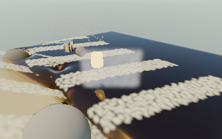
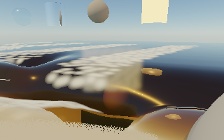
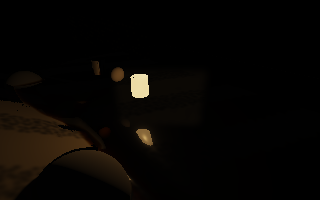

November 13, 2026 · AMD Radeon Pro 560X · Deno 2.9.8 / native wgpu / Metal
Correct images and fewer submitted instances, but no meaningful full-scene speedup. This experiment remains off in the normal app. Seven bounded full-scene runs finished without graphics-context/device loss. Original physics, visual features, saved edits, 60 FPS cap and historical tests remain unchanged.
Three small compute stages select active slots, scan group totals, and write stable original IDs plus an indirect draw count. Sea foam rejects zero-coverage amounts conservatively; grains reject dead/delayed births; fine water reuses its existing optical-visibility records. The draw consumes this list directly on the same GPU, without reading counts back during playback. Original IDs preserve random seeds, material lookup, alpha-blending order, covariance projection and SH lighting. No extra world-space geometry or lighting preparation is added.
Uses ordinary WebGPU indirect drawing and uniform workgroup barriers, with no mesh-shader/subgroup requirement. Capacity is bounded to 65,536 slots per list; the original draw is the unsupported-renderer fallback. A CPU reference independently checks the ordered IDs. All normal simulation ownership and CPU/GPU transfers are unchanged.
640 × 400 native window, fixed 320 × 200 scene rendering, 3,024 water markers, 144 ground edits, seeded patterned organic foam, wind 12 m/s. Current CPU/Wasm field/physics policy, native GPU rendering, rain/tides/cycles off. The same ordinary capped application loop runs 96 frames per trial; the first 16 are discarded, leaving 79 wall-time intervals and 10.533 simulated seconds. These are full-frame rates including presentation and physics, not kernel timings. Allocations are the renderer’s tracked bytes after warm-up, not peak GPU or process memory.
| Run / raw data | FPS | Realtime | p95 frame ms | Frame σ ms | Allocated MiB |
|---|---|---|---|---|---|
| reference-a | 6.245 | 0.833× | 178.6 | 9.6 | 49.82 |
| all-a | 6.220 | 0.829× | 179.6 | 9.9 | 50.39 |
| sea-a | 6.302 | 0.840× | 180.3 | 9.4 | 49.82 |
| fine-a | 6.283 | 0.838× | 178.8 | 11.2 | 50.32 |
| all-b | 6.226 | 0.830× | 181.7 | 10.1 | 50.39 |
| reference-b | 6.320 | 0.843× | 178.8 | 10.4 | 49.82 |
| all-final | 6.199 | 0.827× | 182.3 | 9.9 | 50.39 |
Reference pooled: 6.282 FPS / 0.838×. Combined compaction pooled: 6.215 FPS / 0.829× (-1.07%). The separate sea/fine trials stay within the reference range. Variance and p95 do not improve consistently. Short sequential trials on this Mac do not establish an RTX result or a long-session guarantee. Native GPU pass timestamps are unavailable on this adapter/runtime; frame intervals include completion and presentation overhead.
21 GPU/CPU cases match IDs, counts and order exactly: empty, one-slot, sparse group boundaries, full 65,536 slots and a non-multiple final group. No overflow, nonfinite outputs or unexpected GPU errors in reported checks. 55 focused tests, the final seven guard/module tests, and both web/native builds pass. Duplicate queued use, invalid capacities and disposal before flushing are rejected.
Ten frozen image comparisons cover ordinary beach, carved sand/objects, foam/grains, four camera angles, underwater and night. All RGB components are identical to the reference; repeat-reference error is also zero. Fixtures explicitly require all three particle types to survive selection. The representative foam/grain view submits 2,359 / 18,432 sea-foam slots, 222 / 8,192 grain slots, and 360 / 4,096 fine-water slots—87%, 97% and 91% fewer respectively. These are selected instances, not a claim about the same percentage of total GPU time. Fine-water visibility/lighting and whole-scene physics still run.






Keep the experiment isolated. Compaction is a useful tested building block for future distant Gaussian groups, but reducing already-cheap dead-slot rejection does not currently repay the scans in full-scene FPS. Do not promote it on instance-count reduction alone.
The next focused representation candidate is conservative sparse surface bounds that skip empty ray intervals, refining actual hits with the current representation. Far Gaussian aggregates remain another lead: they must reduce work on live visible groups while preserving coverage, holes and SH response. Full CPU water mirrors and native completion overhead remain separate structural bottlenecks. All are tracked in DEVELOPMENT_BACKLOG.md.
npm run build:native .native/tools/deno run --config native/deno.json --allow-read --allow-write=.native native/particle-compaction-numeric.js .native/tools/deno run --config native/deno.json --allow-read --allow-write=.native --allow-env --allow-sys --allow-ffi native/particle-compaction-check.js .native/tools/deno run --config native/deno.json --allow-read --allow-write=.native --allow-env --allow-sys --allow-ffi native/particle-compaction-bench.js reference busy trial .native/tools/deno run --config native/deno.json --allow-read --allow-write=.native --allow-env --allow-sys --allow-ffi native/particle-compaction-bench.js all busy trial
Run one graphics process at a time. Existing compile deadlines, completion timeout, memory limit and one-outstanding-frame guard remain active. This report starts no graphics workload.